KT Wallet — UI 测试报告
明细报告:Android 首轮 · iOS 首轮
一、结论
两个平台的全部主要流程都能走通,没有崩溃、没有卡死、没有死路。 共发现 18 个问题,已修 16 个并逐项真机复验;剩余 2 个是新功能与共享组件改动, 不影响可用性,单独排期更合适。
其中最要紧的三个,都是"界面在说谎"这一类:钱包展示用户并不持有的 3,120 USDT 余额;网络设置展示从未测量过的 RPC 延迟, 且 Solana 恒显故障而该节点实测健康;助记词界面在 Android 上可被完整截图, 而界面本身写着 "Don't screenshot"。三个都已修复。
docs/TESTING.md:本报告不含任何助记词、私钥、PIN
或访问令牌。所有会显示 BIP-39 词表的界面(备份 2/3、抽词验证 3/3、查看助记词)截图
在测试过程中即时删除,不进入报告。只记录公开地址。
二、测试范围与方法
方法:在两台模拟器上安装真实构建,人工逐屏点击每一个可交互元素, 对照预期核验;凡是界面显示的数字,都回到源码或链上核对来源是否真实。 自动化侧跑全仓测试 + 依赖防火墙 + Go 网关。
不在本报告范围:链上转账结果(见 Android 首轮报告 的 Phase 2, 7 条测试网 15 笔交易);物理设备;性能与压力测试。
覆盖矩阵
| 流程 | Android | iOS | 备注 |
|---|---|---|---|
| 设备模式选择器 / 单安装包 | ✅ | ✅ | 进入离线签名器前有飞行模式确认 |
| 创建钱包(风险提示 → 助记词 → 抽词验证) | ✅ | ✅ | 真实 BIP-39;未选中时 Confirm 禁用;选错给提示 |
| 生物识别(落库 / 查看助记词 / 签名) | ✅ | ✅ | 取消可干净返回,无崩溃 |
| App 锁 / 自动锁定 / 后台隐私遮罩 | ✅ | ✅ | 冷启动拦截,通过后进首页 |
| 首页多链资产 + 隐私模式 | ✅ | ✅ | 7 链 + 代币,真实派生地址 |
| 资产详情页 | ✅ | ✅ | F-15 修复后:Android 验代币分支,iOS 验原生分支 |
| 钱包切换器 / 管理 / 详情 / 改名 / 删除 | ✅ | ✅ | 删除二次确认文案正确 |
| 收款(QR / 切链 / 复制 / 分享) | ✅ | ✅ | iOS 用 simctl pbpaste 逐字校验剪贴板 |
| 转账表单(跨链校验 / 余额 / 手续费档) | ✅ | ✅ | Next 正确禁用 |
| 扫码(权限申请 / 拒绝降级 / 相机预览) | ✅ | ⚠️ | iOS 模拟器无相机,走的正是降级分支 |
| 通讯录(新增 / 自动识别链 / 复制 / 删除) | ✅ | ✅ | 从地址格式自动判链 |
| 设置(安全 / 货币 / 语言 / 设备模式) | ✅ | ✅ | iOS 验证方式显示 "Face ID / Biometrics" |
| 网络设置(主网/测试网 / 逐链 / 自定义 / 网关) | ✅ | ✅ | 自定义网络保存前真实探测 RPC 并校验 chainId |
| 代币管理 | ✅ | ✅ | 空状态 |
| i18n(简中 / English / 日本語) | ✅ | ✅ | 即时全量切换,无残留 |
| 离线签名器模式 | ✅ | ✅ | Android 受 FLAG_SECURE 保护,取证用无障碍树 |
三、问题清单
| # | 问题 | 级别 | 平台 | 状态 |
|---|---|---|---|---|
| F-15 | 代币详情页显示写死的 3,120 USDT;每一行资产都开同一页 | P1 | 两平台 | 已修 · 双端复验 |
| F-16 | RPC 延迟与健康状态是写死的;Solana 恒显 Timeout | P1 | 两平台 | 已修 · 双端复验 |
| F-13 | TRON 广播报文缺 raw_data,交易 100% 无法上链 |
P1 | 两平台 | 已修 · 2 笔 Nile 上链 |
| F-1 | 钱包模式助记词界面可被截图(界面却写着禁止截图) | P1 | Android | 已修 · 截图变纯黑 |
| D-1 | iOS 无 FLAG_SECURE 等价物,助记词界面可截图 | P2 | iOS | 已缓解 · 录屏遮蔽 + 截图告警 |
| F-14 | TronGrid 的 Error 字段被吞,失败原因显示为 null |
P2 | 两平台 | 已修 |
| F-5 / F-17 | 隐私遮罩残留旧品牌 "Libra / 天秤" 文案与 ⚖ 字形 | P2 | 两平台 | 已修 · 16 处 |
| F-3 | 隐私模式只遮总额;设置里的开关首页压根没读 | P2 | 两平台 | 已修 · 双端复验 |
| F-4 | 收款页没有复制地址入口 | P2 | 两平台 | 已修 · 双端复验 |
| F-12 | 代币管理空白卡片,像坏掉的搜索框 | P2 | 两平台 | 已修 · 双端复验 |
| F-18 | 签名类 E2E 在有生物识别的设备上必然超时(无人应答) | P2 | 测试基建 | 已写入文档(见末尾) |
| F-8 | 通讯录空态复用了搜索无结果的文案 | P3 | 两平台 | 已修 · 双端复验 |
| F-10 | 首页链标签形似筛选 chip 却不可点 | P3 | 两平台 | 已修 · 跳网络设置 |
| F-2 | 英文缺 ICU plural,显示 "1 wallets" | P3 | 两平台 | 已修 |
| F-6 | 金额输入允许前导零(01.5) |
P3 | 两平台 | 已修 · 双端复验 |
| F-7 | 相机不可用文案未本地化且没说原因 | P3 | 两平台 | 已修 |
| F-9 | 通讯录联系人不能编辑 | P3 | 两平台 | 未做 · 属新功能 |
| F-11 | 添加网络表单的链系列 chip 文字换行截断 | P3 | 两平台 | 未做 · 动共享组件会牵动 golden |
setUserAuthenticationRequired(true) 创建,
加密操作本身就要求新鲜鉴权;iOS Keychain 的访问控制只作用于读取。
这是平台强制差异,强行统一反而是错的 —— 已在两端源码加注释说明。
真正要紧的不变量两端一致且实测过:导出助记词 / 签名 / 删除钱包永远鉴权。
四、三个"界面在说谎"的修复对照
F-15 代币详情页
修复前:TokenDetailScreen 不接受任何参数,标题、余额、价格、合约全部写死;
首页与资产 tab 都是无参 push('/token'),所以每一行资产点开的都是同一页。
修复后:资产标识随路由传入,按被点的资产渲染真实数据,未加载一律 --。

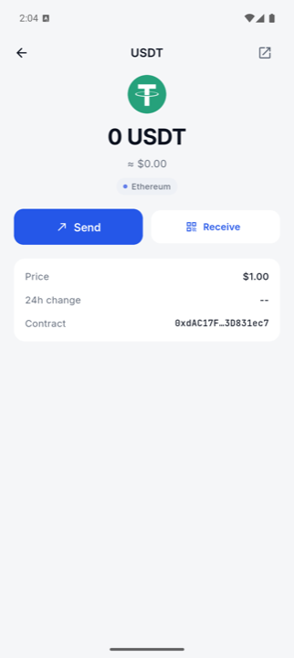
0 USDT,合约是以太坊 USDT 的真实地址 0xdAC17F…3D831ec7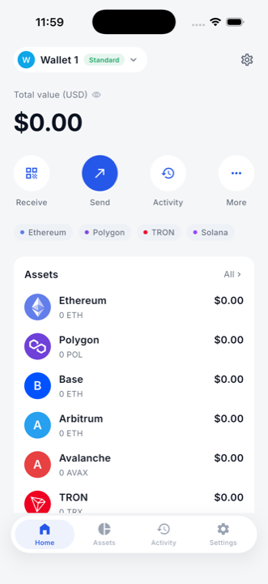
0 ETH ≈ $0.00、实时价格 $1,955.87、24h 无数据源显示 --F-16 RPC 延迟徽章
修复前是字符串字面量,两台不同机器显示完全相同的 86/112/64 ms;
Solana 恒为红色 Timeout,而同一轮测试中该 Devnet 节点刚跑通 4 笔交易。
修复后复用既有 RpcProbe 实测计时,三态 measuring / ok / unreachable。
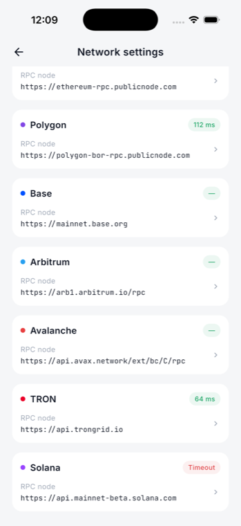
—,Solana 恒为 Timeout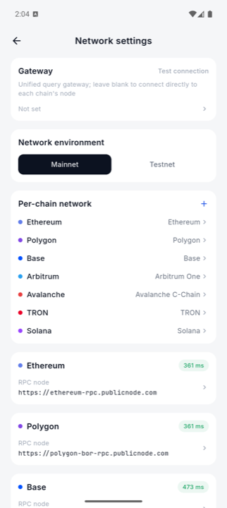

F-1 / D-1 助记词界面的截图防护
screencap 返回纯黑单色图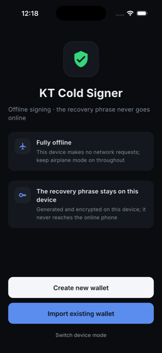
五、界面截图
Android
入口与创建

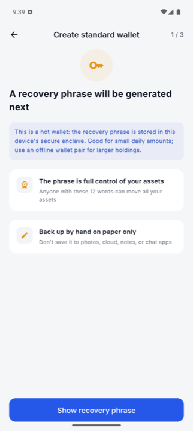
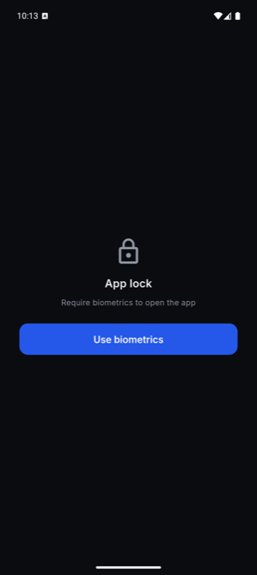
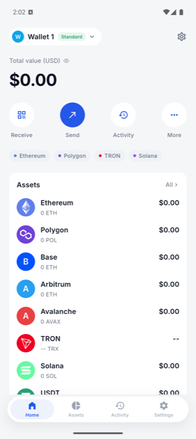
备份(2/3)与抽词验证(3/3)会显示 BIP-39 词表,按安全规则不纳入报告。
首页与钱包

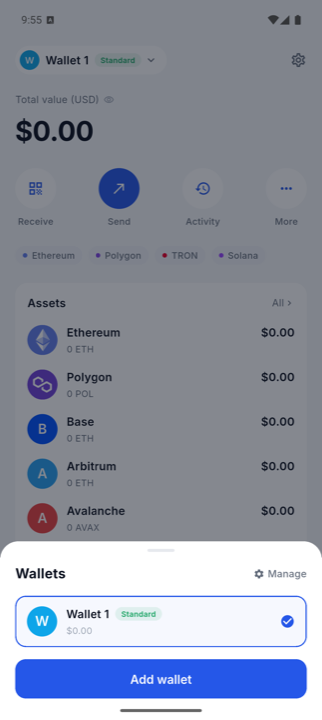

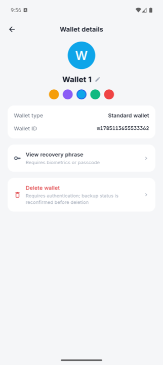
收款与转账

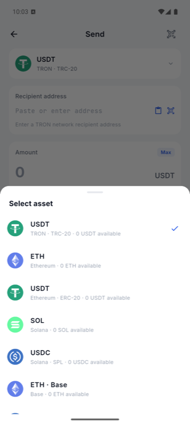

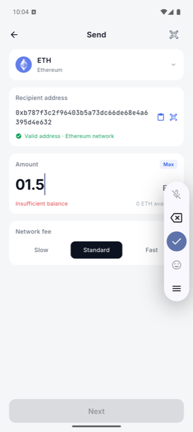
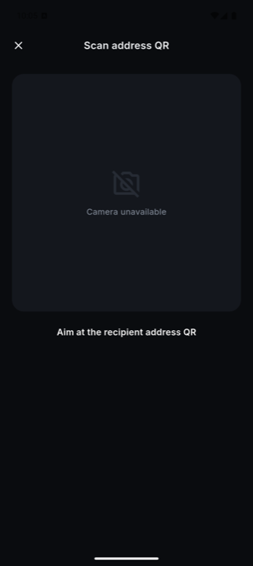

设置与网络
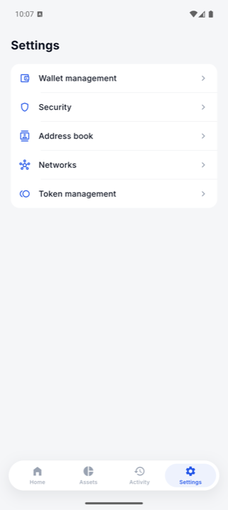
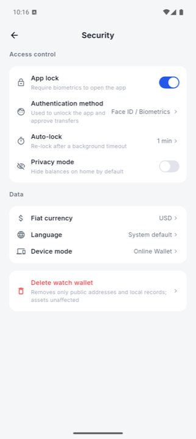
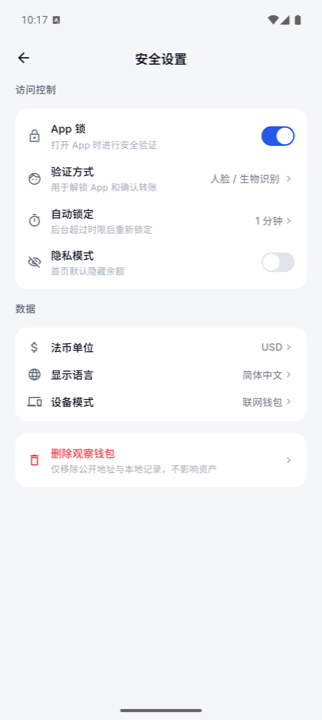
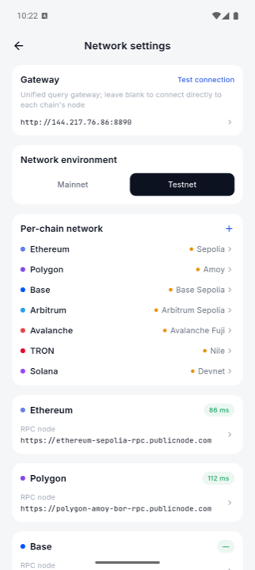

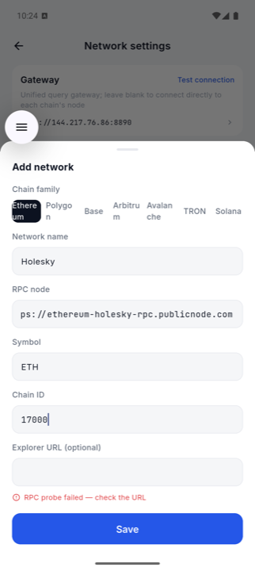
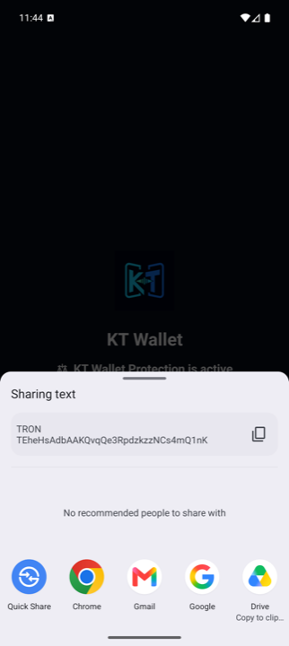
其他
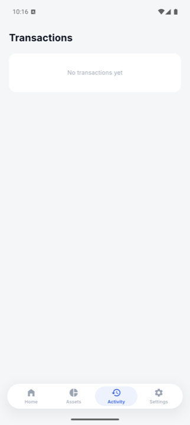
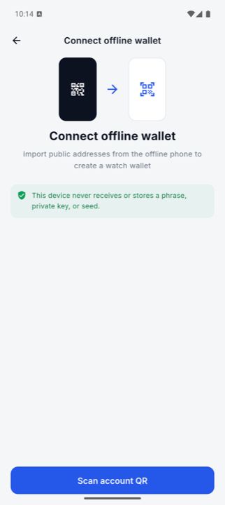
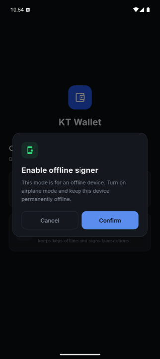
iOS
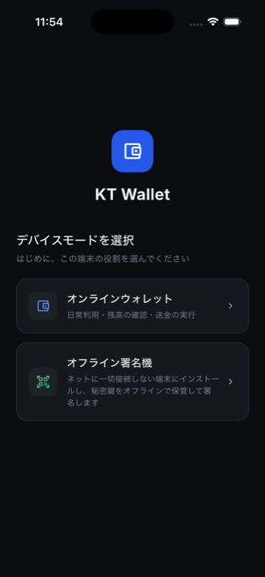
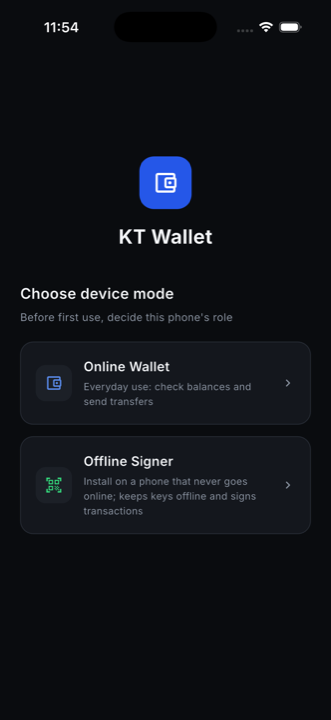
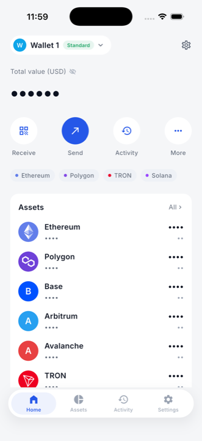
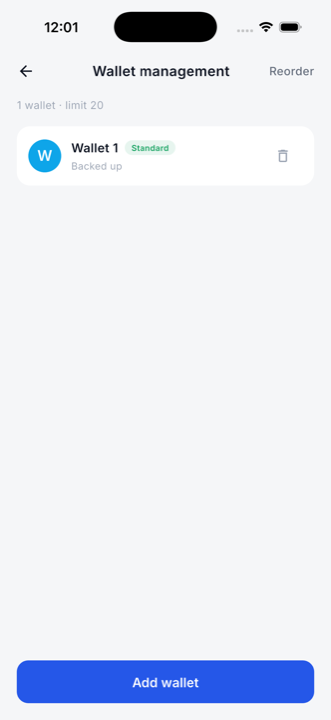
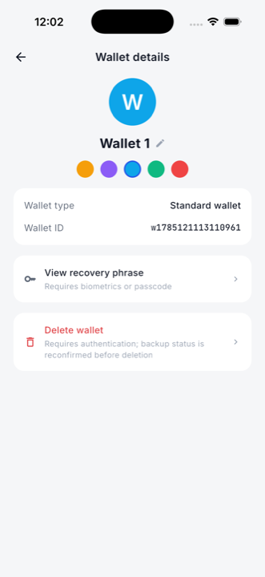
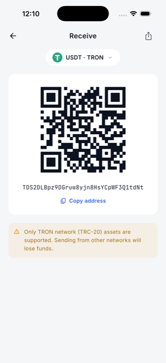
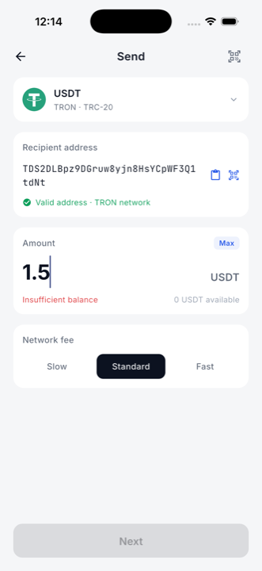
1.5 而非 01.5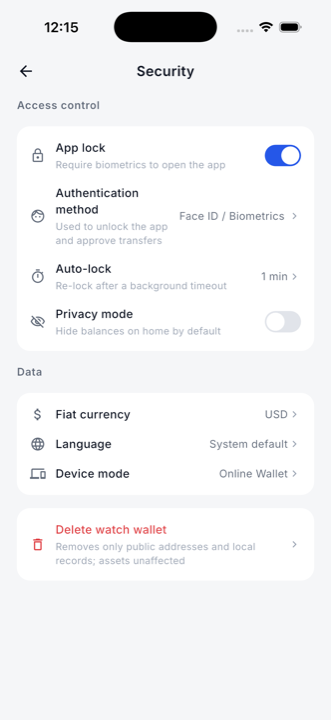
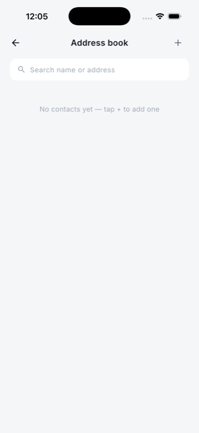
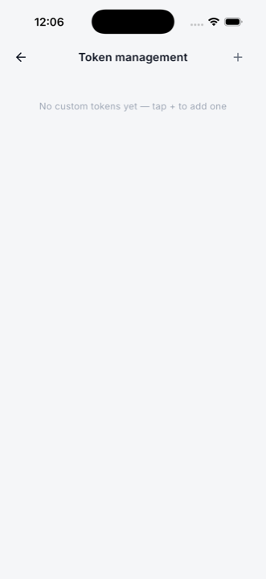
六、自动化验证
| 套件 | 结果 |
|---|---|
flutter analyze(整个 workspace) | No issues found |
| apps/kt_wallet | 416 passed |
| apps/cold_signer | 104 passed |
| packages/chains | 143 passed |
| packages/airgap_protocol / core_crypto / wallet_data / ui_kit / test_support | 59 / 33 / 27 / 17 / 21 passed |
tool/check_deps.dart(依赖防火墙) | OK |
Go 网关 go vet + go test -count=1 | 全部 ok |
| Golden | 无未声明漂移(仅 receive.png / network.png 因本次改动重录) |
Dart 合计 820 个测试。Go 用
-count=1 强制跳过缓存。跑完 git status 为空。
七、待办
- F-9 联系人编辑 —— 新功能而非缺陷修复,建议走产品排期。
- F-11 chip 文字换行 —— 要改共享
ui_kit组件或 Add network 布局, 会牵动其他界面 golden,单独提交更干净。 - 测试文档 —— F-18 的处置写进了
docs/TESTING.md§6.0 (签名类 E2E 必须先让设备能应答生物识别,附 Android/iOS 自动应答命令; 以及集成测试跑完会卸载 App、Solanaconfirmed/finalized竞态)。 但该文件在.gitignore里,这段内容目前只存在于本地 —— 需要决定是移到已跟踪的文档,还是把它从 ignore 中取出。